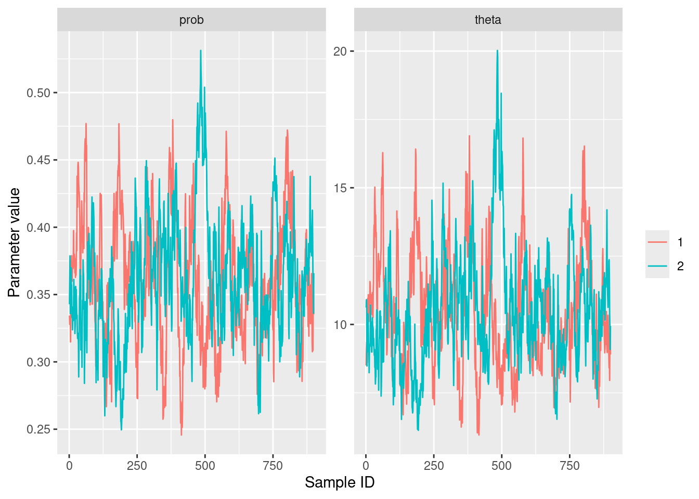
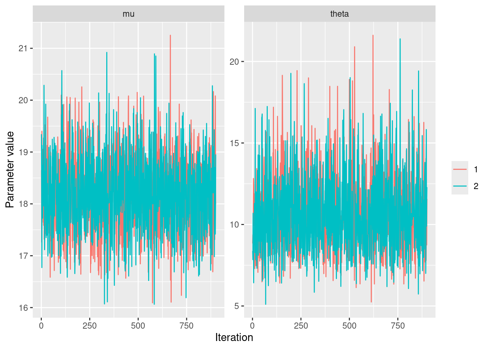
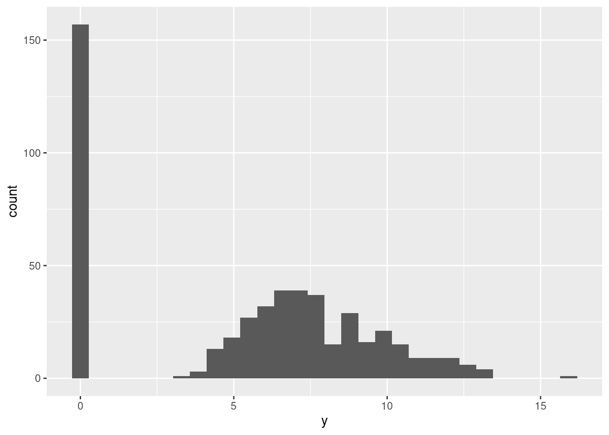
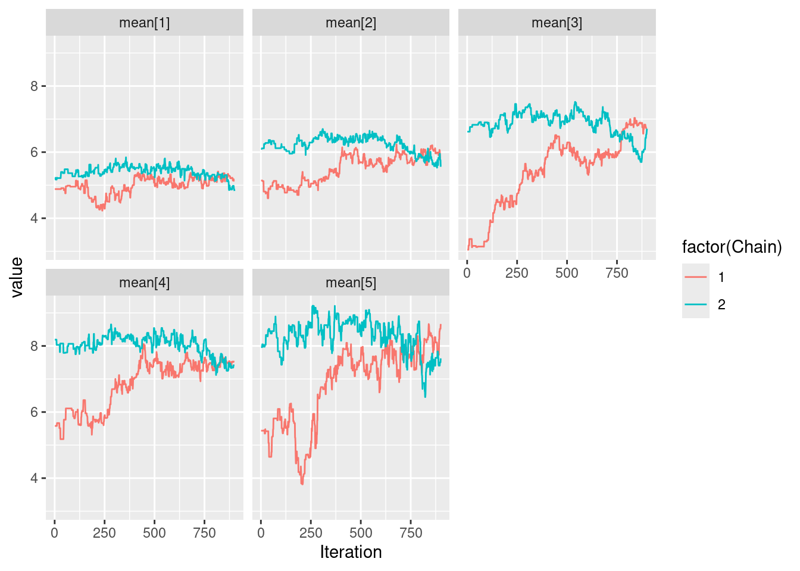
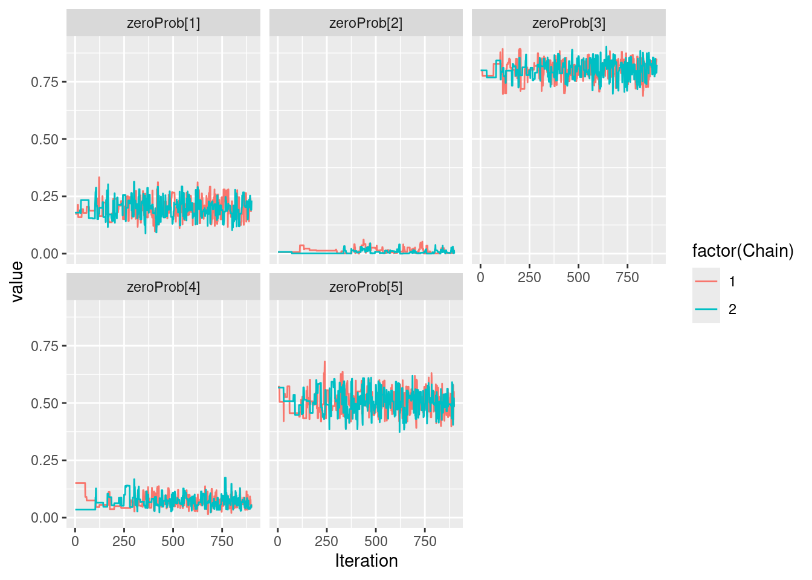
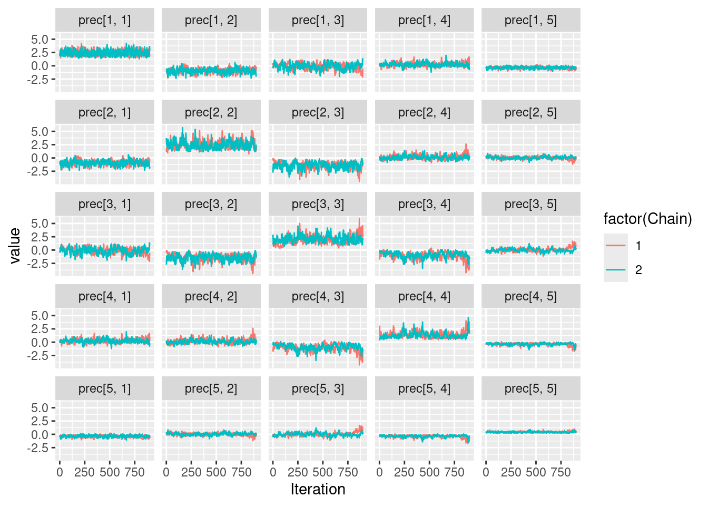
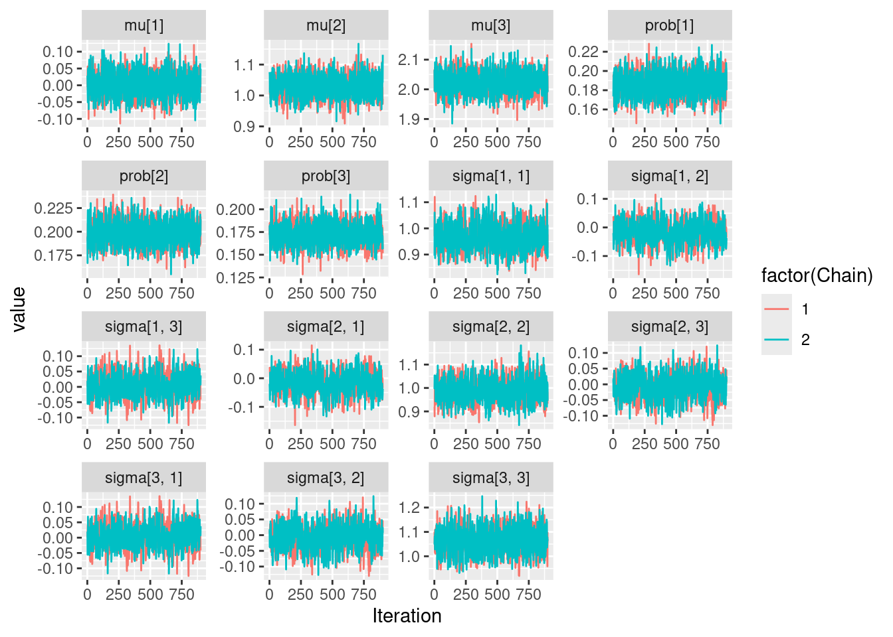

library(compareMCMCs)
library(ggmcmc)
library(mvtnorm)
library(nimble)
library(nimbleHMC)
library(tidyverse)Introduction to nimble
Required packages for this tutorial
Short presentation of nimble
First, a very good reference: https://r-nimble.org/html_manual/cha-welcome-nimble.html
The nimble package is:
- A system for writing statistical models flexibly (based on
bugsandjags). - A library of inference algorithms (MCMC, HMC, Laplace approximation).
- A compiler that generates and compiles C++ for your models and algorithms without knowing it is C++.
There is a nimble language with the basics for building statistical models (e.g. the key probability distributions, some key transformation functions).
But, this remains limited and to have full flexibility, ones need to build its own functions, which can be very challenging.
Fitting a model in a bayesian framework with nimble
Toy model
We observe a sample \(Y_1,\dots, Y_n\) of i.i.d. random variables having a negative binomial distribution with parameter \(p \in [0, 1]\) and \(\theta \in \mathbb{R}_+^*\). Formally, for \(i \in \lbrace 1,\dots, n\rbrace\), and \(k \in \mathbb{N}\), we have that:
\[ \mathbb{P}\left(Y_i = k \vert p, \theta\right) = \frac{\Gamma(k + \theta)}{k!\Gamma(\theta)}p^\theta(1 - p)^k\,. \]
Let’s simulate data from this model with \(n = 100, p = 0.4\) and \(\theta = 12\):
set.seed(123) # For reproducibility
data_ex1 <- rnbinom(n = 100, prob = 0.4, size = 12)Our goal is to estimate \(p\) and \(\theta\) from these observations, within a Bayesian framework. For this tutorial, we assume the following priors: \[\begin{align*} \theta &\sim \mathcal{E}(0.1)\,,\\ p &\sim \mathcal{U}\left[0, 1\right]\,.\\ \end{align*}\]
Defining a negative binomial model in nimble
Basically, as in BUGSor JAGS, the user’s role is to write the way to simulate the data and to give the prior distributions of the unkown. This is done within the nimbleCode function. This function will typically need to use built-in distributions that can be seen in the native documentation. All random variables must be assigned using the ~ symbol while deterministic quantities are assigned using the <- or = as in R. Overall, the syntax is quite similar to R.
code_neg_bin <- nimbleCode({
# Observation model
for(i in 1:n){# n is never defined before, it will be a constant
y[i] ~ dnbinom(prob, theta)
}
# PRIORS
prob ~ dunif(0, 1)
theta ~ dexp(0.1)
})Note that in this code, nothing distinguishes observed data from unknown (or latent variables). The order of lines has no importance as everything will be compiled afterwards.
Defining the nimble model
Now that the code exists, we define the model. That’s here that data and constants will be provided. Typically, data are quantities which are considered as realizations of random variables in the code, while constants are not.
model_neg_bin <- nimbleModel(code = code_neg_bin,
name = "Negative binomial",
constants = list(n = length(data_ex1)),
data = list(y = data_ex1))Defining modelBuilding modelSetting data and initial valuesRunning calculate on model
[Note] Any error reports that follow may simply reflect missing values in model variables.Checking model sizes and dimensions [Note] This model is not fully initialized. This is not an error.
To see which variables are not initialized, use model$initializeInfo().
For more information on model initialization, see help(modelInitialization).Note that the code points that we did not give initial guesses (which would typically be starting points for MCMC sampling algorithms). We will do it in the sampling step.
Basic MCMC sampling
A direct way to proceed is to use the nimbleMCMC function that provides basic Metropolis Hastings within Gibbs sampling.
posterior_samples_neg_bin <- nimbleMCMC(model_neg_bin,
inits = list(prob = 0.5, theta = 1),
nchains = 2, # Number of independent chains
niter = 10000, # Number of it. per chain
thin = 10, # Thinning
nburnin = 1000) # Number of initial iterations discardedCompiling
[Note] This may take a minute.
[Note] Use 'showCompilerOutput = TRUE' to see C++ compilation details.running chain 1...|-------------|-------------|-------------|-------------|
|-------------------------------------------------------|running chain 2...|-------------|-------------|-------------|-------------|
|-------------------------------------------------------|Exploring the results
Now that we have performed MCMC sampling, we can access the results, which are lists (one element per chain) of matrices having \(n_{\text{iter}}\) rows and \(n_{\text{parameters}}\) columns.
str(posterior_samples_neg_bin)List of 2
$ chain1: num [1:900, 1:2] 0.334 0.328 0.333 0.334 0.315 ...
..- attr(*, "dimnames")=List of 2
.. ..$ : NULL
.. ..$ : chr [1:2] "prob" "theta"
$ chain2: num [1:900, 1:2] 0.343 0.363 0.379 0.336 0.352 ...
..- attr(*, "dimnames")=List of 2
.. ..$ : NULL
.. ..$ : chr [1:2] "prob" "theta"To perform any post processing or plotting results, a bit of formatting must be done.
formatted_results <- imap_dfr(posterior_samples_neg_bin,
function(x, nm){
as.data.frame(x) %>%
rowid_to_column(var = "Iteration") %>%
mutate(Chain = str_remove(nm, "chain"))
}) %>%
pivot_longer(cols = -c("Iteration", "Chain"),
names_to = "Parameter",
values_to = "value")We can then perform usual plots.
ggplot(formatted_results) +
aes(x = Iteration,
y = value, color = Chain) +
facet_wrap(~Parameter, scales = "free") +
geom_line() +
labs(x = "Sample ID", y = "Parameter value", color = "")
Package for automatic formatting of results
For ggplotusers, the ggmcmc package provide useful tools for plots and formatting of MCMC outputs in R (not necessarily for the nimble package). This package is suited for any coda object, which is an historic format for MCMC outputs in R. We can specify during the sampling that we want outputs to be in coda.
posterior_samples_neg_bin <- nimbleMCMC(model_neg_bin,
nchains = 2,
niter = 10000,
thin = 10,
nburnin = 1000,
samplesAsCodaMCMC = TRUE)Compiling
[Note] This may take a minute.
[Note] Use 'showCompilerOutput = TRUE' to see C++ compilation details.running chain 1...|-------------|-------------|-------------|-------------|
|-------------------------------------------------------|running chain 2...|-------------|-------------|-------------|-------------|
|-------------------------------------------------------|We can see that this modifies the type of output:
str(posterior_samples_neg_bin)List of 2
$ chain1: 'mcmc' num [1:900, 1:2] 0.286 0.31 0.301 0.304 0.348 ...
..- attr(*, "dimnames")=List of 2
.. ..$ : NULL
.. ..$ : chr [1:2] "prob" "theta"
..- attr(*, "mcpar")= num [1:3] 1 900 1
$ chain2: 'mcmc' num [1:900, 1:2] 0.398 0.412 0.419 0.429 0.433 ...
..- attr(*, "dimnames")=List of 2
.. ..$ : NULL
.. ..$ : chr [1:2] "prob" "theta"
..- attr(*, "mcpar")= num [1:3] 1 900 1
- attr(*, "class")= chr "mcmc.list"Now, we can use the ggsfunction which performs the post processing that we made above.
formatted_results <- ggs(posterior_samples_neg_bin)
formatted_results # same as above# A tibble: 3,600 × 4
Iteration Chain Parameter value
<int> <int> <fct> <dbl>
1 1 1 prob 0.286
2 2 1 prob 0.310
3 3 1 prob 0.301
4 4 1 prob 0.304
5 5 1 prob 0.348
6 6 1 prob 0.325
7 7 1 prob 0.308
8 8 1 prob 0.346
9 9 1 prob 0.358
10 10 1 prob 0.383
# ℹ 3,590 more rowsThen, everything works as before!.
Defining a nimbleFunction
What makes nimble’s popularity is it suitability for statistical programming.
As your specific model will certainly requires specific functions, we cannot expect to find all our tools in the built-in function.
However, we can define new functions in a syntax which is pretty similar to R.
Alternative parameterization of the negative binomial
Suppose now we want to perform negative binomial regression. In this context, we model the expectation (typically through a link to some covariates) of the response variable. Typically, if we denote, for all \(1\leq i \leq n\), \(\mu = \mathbb{E}\left[Y_i\right]\), we assume the following prior:
\[
\ln \mu \sim \mathcal{N}\left(0, 1\right)\,.
\] Sadly, in nimble, we do not have access to an implementation of the negative binomial distribution parameterized by \((\mu, \theta)\). However, we know that: \[
\mu = \theta \times \frac{1 - p}{p}\,,
\] or, equivalently, that: \[
p = \frac{\theta}{\theta + \mu}
\]
get_p_from_mu <- nimbleFunction(
run = function(mu = double(0),
theta = double(0)) { # type declarations
returnType(double(0)) # return type declaration
output <- theta / (theta + mu)
return(output)
})
get_p_from_mu(18, 12) # Works as a usual R function[1] 0.4code_alternatif <- nimbleCode({
# Observation model
for(i in 1:n){# n is never defined before, it will be a constant
y[i] ~ dnbinom(prob, theta)
}
# Alternative vectorized formulation
# y[1:n] ~ dnbinom(prob, theta)
# PRIORS
log_mu ~ dnorm(0, 1)
theta ~ dexp(0.1)
# Quantites deterministes
mu <- exp(log_mu)
prob <- get_p_from_mu(mu = mu, theta = theta)
})
model_alternatif <- nimbleModel(code = code_alternatif,
name = "Alternative negative binomial",
constants = list(n = length(data_ex1)),
data = list(y = data_ex1),
inits = list(mu = 0.5, theta = 1))Defining modelBuilding modelSetting data and initial valuesRunning calculate on model
[Note] Any error reports that follow may simply reflect missing values in model variables.Checking model sizes and dimensions [Note] This model is not fully initialized. This is not an error.
To see which variables are not initialized, use model$initializeInfo().
For more information on model initialization, see help(modelInitialization).posterior_samples_alternatif <- nimbleMCMC(model_alternatif,
nchains = 2,
niter = 10000,
thin = 10,
nburnin = 1000,
monitors = c("prob", "theta"),
samplesAsCodaMCMC = TRUE)Compiling
[Note] This may take a minute.
[Note] Use 'showCompilerOutput = TRUE' to see C++ compilation details.running chain 1...|-------------|-------------|-------------|-------------|
|-------------------------------------------------------|running chain 2...|-------------|-------------|-------------|-------------|
|-------------------------------------------------------|Defining new distribution
An alternative is to define a new distribution.
dmynegbin <- nimbleFunction(
run = function(x = double(0),
mu = double(0),
theta = double(0),
log = integer(0, default = 0)) {
returnType(double(0))
prob = get_p_from_mu(mu, theta)
output <- dnbinom(x, size = theta, prob = prob, log = log)
return(output)
})
registerDistributions(list(
dmynegbin = list(BUGSdist = "dmynegbin(mu, theta)",
discrete = TRUE, pqAvail = FALSE)
)) [Warning] Random generation function for dmynegbin is not available. NIMBLE is generating a placeholder function, rmynegbin, that will invoke an error if an algorithm needs to simulate from this distribution. Some algorithms (such as random-walk Metropolis MCMC sampling) will work without the ability to simulate from the distribution. If simulation is needed, provide a nimbleFunction (with no setup code) to do it.code_with_my_dist <- nimbleCode({
# Observation model
for(i in 1:n){# n is never defined before, it will be a constant
y[i] ~ dmynegbin(mu, theta) # my distribution
}
# PRIORS
log_mu ~ dnorm(0, 1)
mu <- exp(log_mu)
theta ~ dexp(0.1)
})
model_with_my_dist <- nimbleModel(code = code_with_my_dist,
name = "Alternative negative binomial",
constants = list(n = length(data_ex1)),
data = list(y = data_ex1),
inits = list(log_mu = 0.5, theta = 1))Defining modelBuilding modelSetting data and initial valuesRunning calculate on model
[Note] Any error reports that follow may simply reflect missing values in model variables.Checking model sizes and dimensionscompileNimble(model_with_my_dist)Compiling
[Note] This may take a minute.
[Note] Use 'showCompilerOutput = TRUE' to see C++ compilation details.Derived CmodelBaseClass created by buildModelInterface for model Alternative negative binomialposterior_samples_alternatif <- nimbleMCMC(model_with_my_dist,
nchains = 2,
niter = 10000,
thin = 10,
nburnin = 1000,
monitors = c("mu", "theta"),
samplesAsCodaMCMC = TRUE)Compiling
[Note] This may take a minute.
[Note] Use 'showCompilerOutput = TRUE' to see C++ compilation details.running chain 1...|-------------|-------------|-------------|-------------|
|-------------------------------------------------------|running chain 2...|-------------|-------------|-------------|-------------|
|-------------------------------------------------------|posterior_samples_alternatif %>%
ggs() %>%
ggplot() +
aes(x = Iteration,
y = value, color = factor(Chain)) +
facet_wrap(~Parameter, scales = "free") +
geom_line() +
labs(x = "Iteration", y = "Parameter value", color = "")
Alternative MCMC sampler
One big strength of nimble are the several samplers that are available in the package.
Conjuguate priors
First, nimble is able to identify conjugate priors and make the exact computation of the posterior link.
HMC algorithm
nimble provides support for Hamiltonian Monte Carlo (HMC) and compute the derivatives of the likelihood through automatic differentiation. The nimbleHMC package implement two versions of No-U-Turn (NUTS) HMC sampling: the standard one developed in Hoffman and Gelman (link) and an updated one with improved adaptation routines and convergence criteria, which matches the HMC sampler of STAN.
In order to allow an algorithm to use AD for a specific model, that model must be created with buildDerivs = TRUE.
# Build model with nimble
model_neg_bin_HMC <- nimbleModel(code = code_neg_bin,
name = "Negative binomial",
constants = list(n = length(data_ex1)),
data = list(y = data_ex1),
inits = list(prob = 0.5, theta = 1),
calculate = FALSE, buildDerivs = TRUE) # This is the line required for running HMCDefining modelBuilding modelSetting data and initial valuesChecking model sizes and dimensionsC_model_neg_bin_HMC <- compileNimble(model_neg_bin_HMC) # Compile the model (they require this for the compilation of the HMC object)Compiling
[Note] This may take a minute.
[Note] Use 'showCompilerOutput = TRUE' to see C++ compilation details.# Build the MCMC algorithm which applies HMC sampling
HMC <- buildHMC(C_model_neg_bin_HMC)===== Monitors =====
thin = 1: prob, theta
===== Samplers =====
NUTS sampler (1)
- prob, theta # Careful here, when the model has random effects
# HMC requires to set values in the model before running the algorithm
# One solution is to simulate with the model and set the model with these values
# See : https://r-nimble.org/html_manual/cha-mcmc.html#subsec:HMC-example
# Here, as the model is simple, there is no need for this and everything is handled withing nimble/nimbleHMC
## Then everything is standard in nimble
CHMC <- compileNimble(HMC) # Compile the HMC model/algoCompiling
[Note] This may take a minute.
[Note] Use 'showCompilerOutput = TRUE' to see C++ compilation details.samples <- runMCMC(CHMC, niter = 1000, nburnin = 500) # Short run for illustrationrunning chain 1... [Note] NUTS sampler (nodes: prob, theta) is using 500 warmup iterations.
Since `warmupMode` is 'default' and `nburnin` > 0,
the number of warmup iterations is equal to `nburnin`.
The burnin samples will be discarded, and all samples returned will be post-warmup.
|-------------|-------------|-------------|-------------|
|-------------------------------------------------------|summary(coda::as.mcmc(samples)) # Summary of the estimates
Iterations = 1:500
Thinning interval = 1
Number of chains = 1
Sample size per chain = 500
1. Empirical mean and standard deviation for each variable,
plus standard error of the mean:
Mean SD Naive SE Time-series SE
prob 0.3714 0.04763 0.00213 0.005035
theta 10.9433 2.20934 0.09880 0.232706
2. Quantiles for each variable:
2.5% 25% 50% 75% 97.5%
prob 0.284 0.3349 0.3756 0.4048 0.4671
theta 7.074 9.2270 10.7757 12.3756 15.7634And there are plenty of others samplers:
Particle filters / sequential Monte Carlo and iterated filtering (package
nimbleSMC)Monte Carlo Expectation Maximization (MCEM)
See link
The laplace approximation
nimble also implements the Laplace approximation. But be careful, it performs maximum likelihood estimation. This is not the same as INLA (fully bayesian approach), but more like TMB (or glmmTMB- maximum likelihood estimation through Laplace approximation and automatic differentiation).
# We need the derivatives to build the Laplace algorithm
# so we take the object model_neg_bin_HMC built previously
model_laplace <- buildLaplace(model_neg_bin_HMC)
Cmodel_laplace <- compileNimble(model_laplace)Compiling
[Note] This may take a minute.
[Note] Use 'showCompilerOutput = TRUE' to see C++ compilation details.# Get the Laplace approximation for one set of parameter values.
Cmodel_laplace$calcLaplace(c(0.5,0.5)) [1] -1499.737 # Get the corresponding gradient.
Cmodel_laplace$gr_Laplace(c(0.5,0.5))[1] -3552.0000 409.7602# Search the (approximate) MLE
MLE <- Cmodel_laplace$findMLE(c(0.5,0.5)) # Find the (approximate) MLE.
MLE$par[1] 0.366619 10.569421# Get log-likelihood value
MLE$value[1] -333.2813# And output summaries
Cmodel_laplace$summary(MLE)nimbleList object of type AGHQuad_summary
Field "params":
nimbleList object of type AGHQuad_params
Field "names":
[1] "prob" "theta"
Field "estimates":
[1] 0.366619 10.569421
Field "stdErrors":
[1] 0.05242939 2.35119020
Field "randomEffects":
nimbleList object of type AGHQuad_params
Field "names":
character(0)
Field "estimates":
numeric(0)
Field "stdErrors":
numeric(0)
Field "vcov":
<0 x 0 matrix>
Field "scale":
[1] "original"N.b this example is only for illustration of the code. The Laplace approximation is relevant only when there are random effects in the model (which is not the case here).
For a full example see link
Comparing MCMC algorithms
One can compare several algorithms through the package compareMCMCs. It is possible to compare several algorithms internal to nimble with those from jags (or even STAN) algorithms. An example below for nimble and STAN.
# This model code will be used for both nimble and JAGS
modelInfo <- list(
code = code_neg_bin,
constants = list(n = length(data_ex1)),
data = list(y = data_ex1),
inits = list(prob = 0.5, theta = 1)
)
# Here is a custom MCMC configuration function for nimble
configure_nimble_slice <- function(model) {
configureMCMC(model, onlySlice = TRUE)
}
# Here is the call to compareMCMCs
res <- compareMCMCs(modelInfo,
MCMCs = c('nimble', # nimble with default samplers
'nimble_slice' # nimble with slice samplers
),
nimbleMCMCdefs =
list(nimble_slice = 'configure_nimble_slice'),
MCMCcontrol = list(inits = list(prob = 0.5, theta = 1),
niter = 10000,
burnin = 1000))building nimble model...Defining modelBuilding modelSetting data and initial valuesRunning calculate on model
[Note] Any error reports that follow may simply reflect missing values in model variables.Checking model sizes and dimensions===== Monitors =====
thin = 1: prob, theta
===== Samplers =====
RW sampler (2)
- prob
- theta
===== Monitors =====
thin = 1: prob, theta
===== Samplers =====
slice sampler (2)
- prob
- thetaCompiling
[Note] This may take a minute.
[Note] Use 'showCompilerOutput = TRUE' to see C++ compilation details.Compiling
[Note] This may take a minute.
[Note] Use 'showCompilerOutput = TRUE' to see C++ compilation details.|-------------|-------------|-------------|-------------|
|-------------------------------------------------------|
|-------------|-------------|-------------|-------------|
|-------------------------------------------------------|make_MCMC_comparison_pages(res, modelName = 'code_neg_bin',dir = "/tmp/",
control = list(res = 75))Loading required namespace: xtableAnother example: multivariate normal with zero inflated component
We consider a multivariate Gaussian model with zero inflation, where the probability in the zero inflation can depend on the variable. The vector of observations \(Y_i\) lives in \(\mathbb{R}^p\), and its distribution is defined conditionnally on a (multivariate) Bernoulli \(W_i \in {0,1}^p\) and a multivariate Gaussian variable \(Z_i\in\mathbb{R}^p\):
\[\begin{equation} \begin{array}{rcl} Y_{ij} | Z_i, W_{i} & = & W_{ij} \delta_0 + (1 - W_{ij}) Z_{ij}\\ W_{i} & \sim & \otimes_j \mathcal{B}(\pi_j) \\ Z_i & \sim \, \mathcal{N}\left(\mu, \Omega^{-1} \right) \\ \end{array} \end{equation}\]
The parameters to estimate are \(\theta = \{\mu, \Omega, \pi\}\).
Data generation
We consider a simple settings in dimension \(p=5\), with Toeplitz-like covariance.
N <- 100
p <- 5
d <- 1:p
Dsqrt <- diag(sqrt(d))
Sigma <- Dsqrt %*% toeplitz(0.75^(0:(p-1))) %*% Dsqrt
Omega <- solve(Sigma)
mu <- 5 + 1:p
pi <- c(0.25, 0, 0.8, 0.1, .5)Here are some data (100 points):
W <- t(replicate(N, rbinom(p, prob = pi, size = 1)))
Y <- (1 - W) * rmvnorm(N, mu, Sigma)
ggplot(data.frame(y = c(Y))) + aes(x=y) + geom_histogram()
Auxiliary functions
We need some auxiliary nimble functions to handle the density and generation of the random binomial vector \(W\):
dbinom_vector <- nimbleFunction(
run = function( x = double(1),
size = double(1),
prob = double(1),
log = integer(0, default = 0)
) {
returnType(double(0))
logProb <- sum(dbinom(x, prob = prob, size = size, log = TRUE))
if(log) return(logProb) else return(exp(logProb))
})
rbinom_vector <- nimbleFunction(
run = function( n = integer(0, default = 1),
size = double(1),
prob = double(1)
) {
returnType(double(1))
return(rbinom(length(size), prob = prob, size = size))
})Nimble code and model for ZI-normal: V1
Rather than defining a probability density function for this model (which is in fact a bit complicated…), we adopt a generative approach:
ZInormal_code <- nimbleCode({
for (j in 1:p) {
mean[j] ~ dnorm(0,1)
}
for (j in 1:p) {
zeroProb[j] ~ dunif(0,1)
}
prec[1:p,1:p] ~ dwish(Ip[1:p,1:p], p)
for (i in 1:N) {
w[i, 1:p] ~ dbinom_vector(onep[1:p], zeroProb[1:p])
z[i, 1:p] ~ dmnorm(mean[1:p], prec[1:p,1:p])
ytilde[i, 1:p] <- (1 - w[i,1:p]) * z[i,1:p]
## P. Barbillon/M.-P. Étienne: astuce en zero
## a.k.a "I got a trick at zero"
y[i, 1:p] ~ dmnorm(ytilde[i, 1:p], prec_inf[1:p,1:p])
}
})We can now define the nimble model for the ZI-normal model. We give some sound intial values for the parameters and latent variable, define some constants and provide the data:
ZInormal_model <- nimbleModel(
ZInormal_code,
constants =
list(N = N, p = p, Ip = diag(1,p,p),
onep = rep(1,p), prec_inf = diag(1e5,p,p)),
data = list(y = Y, w = W),
inits = list(mean = rep(5,p), prec = diag(1,p,p), zeroProb=rep(0.5,p), z = Y))Defining model [Note] Registering 'dbinom_vector' as a distribution based on its use in BUGS code. If you make changes to the nimbleFunctions for the distribution, you must call 'deregisterDistributions' before using the distribution in BUGS code for those changes to take effect.Building modelSetting data and initial valuesRunning calculate on model
[Note] Any error reports that follow may simply reflect missing values in model variables.Checking model sizes and dimensionsMCMC estimation
Let us run a simple 2-chain MCMC estimation
my_MCMC <- nimbleMCMC(
ZInormal_model,
monitors = c("mean", "prec", "zeroProb"),
nchains = 2,
niter = 1000,
samplesAsCodaMCMC = TRUE,
nburnin=100)Compiling
[Note] This may take a minute.
[Note] Use 'showCompilerOutput = TRUE' to see C++ compilation details.running chain 1...|-------------|-------------|-------------|-------------|
|-------------------------------------------------------|running chain 2...|-------------|-------------|-------------|-------------|
|-------------------------------------------------------|
print(mu)[1] 6 7 8 9 10
print(pi)[1] 0.25 0.00 0.80 0.10 0.50
print(round(Omega,3)) [,1] [,2] [,3] [,4] [,5]
[1,] 2.286 -1.212 0.000 0.000 0.000
[2,] -1.212 1.786 -0.700 0.000 0.000
[3,] 0.000 -0.700 1.190 -0.495 0.000
[4,] 0.000 0.000 -0.495 0.893 -0.383
[5,] 0.000 0.000 0.000 -0.383 0.457Zero inflated multivariate normal revisited
All the above code uses a workaround to avoid defining a new distribution in Nimble which is a ZI multivariate normal.
Let \(Y\) be a random vector. We denote \(\mathbf{i}_*\) the set of indexes for which \(Y\) is non zero, and \(\mathbf{i}_0\) the set of indices for which \(Y\) is 0.
For the zero inflated normal distribution, the p.d.f. is given by: \[
p(y \vert \mu, \Sigma, \pi) = \varphi(y_{\mathbf{i}_*}\vert \mu_{\mathbf{i}_*}, \Sigma_{\mathbf{i}_*;\mathbf{i}_*})\prod_{j\in \mathbf{i_0}}\pi_j \prod_{k\in \mathbf{i}_*}(1 - \pi_k)\,,
\] where \(\varphi(y_{\mathbf{i}_*}\vert \mu_{\mathbf{i}_*}, \Sigma_{\mathbf{i}_*;\mathbf{i}_*})\) is the p.d.f. of a multivariate normal distribution restricted to the indexes where \(y\) is non 0 (and to the corresponding parameters). This distribution can be coded as a nimbleFunction. It is important here that the first argument must correspond to the value at which the density is evaluated, and that the log argument is mandatory.
dZInormal <- nimbleFunction(
run = function(x = double(1),
prob = double(1),
mu = double(1),
sigma = double(2),
log = integer(0, default = 0)){
returnType(double(0))
non_nul_indexes <- which(x!=0)
nul_indexes <- which(x == 0)
p_term <- sum(log(prob[nul_indexes])) +
sum(log(1 - prob[non_nul_indexes]))
mu_term <- 0
if(length(non_nul_indexes) > 0){
chol_mat <- chol(sigma[non_nul_indexes, non_nul_indexes])
restricted_x = x[non_nul_indexes]
restricted_mu = mu[non_nul_indexes]
mu_term <- dmnorm_chol(restricted_x,
restricted_mu,
chol_mat, prec_param = FALSE, log = TRUE)
}
log_output <- p_term + mu_term
if(log){
return(log_output)
}
else{
return(exp(log_output))
}
}
)From my experience, it is better to register this distribution to avoid any confusion about its parameters, nature and dimension of output, etc…
registerDistributions(list(
dZInormal = list(BUGSdist = "dZInormal(prob, mu, sigma)", # How to call in nimble
discrete = FALSE, # Distribution is not discrete
pqAvail = FALSE, # CDF and quantile function are not available
types = c('value = double(1)', # The random variable is a vector
'prob = double(1)', # a vector
'mu = double(1)', # vector
'sigma = double(2)')) # double(2) is a matrix
)) [Warning] Random generation function for dZInormal is not available. NIMBLE is generating a placeholder function, rZInormal, that will invoke an error if an algorithm needs to simulate from this distribution. Some algorithms (such as random-walk Metropolis MCMC sampling) will work without the ability to simulate from the distribution. If simulation is needed, provide a nimbleFunction (with no setup code) to do it.Note that it tells us that we do not provide any way of simulating from this distribution. This is not a problem to run a standard MCMC. Moreover, providing CDF and quantile function could allow some gain in efficiency (at least, that what the help pages says).
The code for the model is then direct:
my_code <- nimbleCode({
for(j in 1:p){
prob[j] ~ dunif(0, 1)
mu[j] ~ dnorm(0, 1)
}
sigma[1:p, 1:p] ~ dwish(Ip[1:p, 1:p], p)
for(i in 1:n){
# I put my custom distribution
Y[i, 1:p] ~ dZInormal(prob[1:p], mu[1:p], sigma[1:p, 1:p])
}
})And now, let’s run it!
# Generating data
set.seed(123)
n_obs <- 1000
n_species <- 3
# Values
U <- mvtnorm::rmvnorm(n = n_obs,
mean = 0:(n_species - 1),
sigma = diag(1, n_species))
# Mask (matrix of zeros and ones)
Z <- rbinom(n = n_obs * n_species, size = 1, prob = .8) %>%
matrix(nrow = n_obs)
# Observations
Y <- round(U * Z, 9)
my_model <- nimbleModel(code = my_code,
constants = list(p = n_species,
n = n_obs,
Ip = diag(1, n_species)),
data = list(Y = Y),
inits = list(mu = rep(0, n_species),
prob = rep(0.5, n_species),
sigma = diag(1, n_species)))Defining modelBuilding modelSetting data and initial valuesRunning calculate on model
[Note] Any error reports that follow may simply reflect missing values in model variables.Checking model sizes and dimensionsresults <- nimbleMCMC(my_model,
samplesAsCodaMCMC = TRUE,
nchains = 2, niter = 10000,
nburnin = 1000, thin = 10)Compiling
[Note] This may take a minute.
[Note] Use 'showCompilerOutput = TRUE' to see C++ compilation details.running chain 1...|-------------|-------------|-------------|-------------|
|-------------------------------------------------------|running chain 2...|-------------|-------------|-------------|-------------|
|-------------------------------------------------------|ggs(results) %>%
ggplot(aes(x = Iteration, y = value, color = factor(Chain))) +
facet_wrap(~Parameter, scales = "free") +
geom_line()